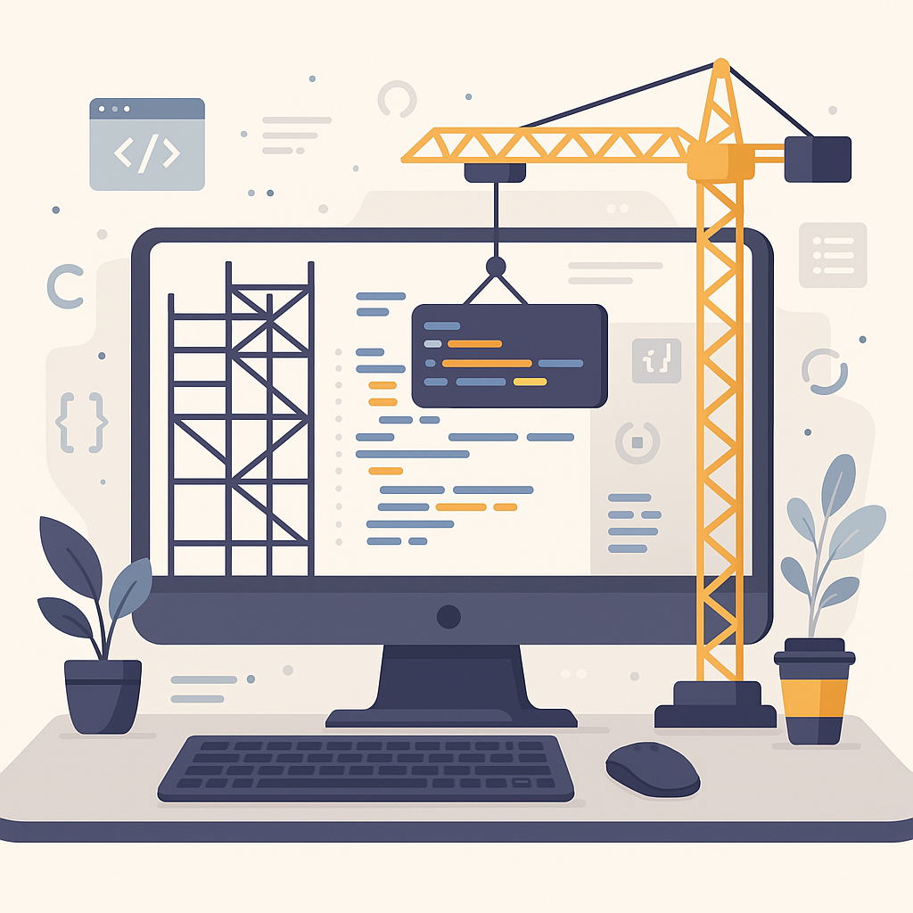

Olá,
Sou o Blucio
Um desenvolvedor Web em início de carreira, focado em resultados e no sucesso de cada projeto que desenvolve.
SOBRE MIM
Sou Desenvolvedor Web com foco em Frontend, responsável por criar e gerenciar interfaces que impulsionam o sucesso de produtos digitais. Convido você a conferir alguns dos meus trabalhos na seção Projetos.
A curiosidade e o desejo constante de aprender são o que me movem. Gosto de explorar o desconhecido e não tenho receio de encarar desafios, mesmo quando envolvem algo que ainda não domino. Acredito que é justamente nesse processo de tentativa, erro e evolução que me aproximo da pessoa e do profissional que quero me tornar.
Proatividade, determinação e vontade de evoluir fazem parte da minha essência. Estou sempre buscando formas de crescer, seja adquirindo novos conhecimentos ou enfrentando situações que me tiram da zona de conforto. Para mim, aprender é uma jornada contínua — e é exatamente isso que torna a tecnologia tão fascinante.
Estou aberto a oportunidades em que eu possa contribuir, crescer e seguir aprendendo. Se você tiver uma oportunidade que se alinhe com minhas habilidades e objetivos, ficarei feliz em conversar.
Minhas Habilidades
HTML
CSS
JavaScript
Python
GIT
Github
Design Responsivo
PROJETOS
Aqui você encontrará alguns dos projetos pessoais que criei, cada projeto contendo seu próprio estudo de caso.
Product List With Cart

Um projeto criado a partir de um desafio do Frontend Mentor para desenvolver e consolidar meus conhecimentos adquiridos.
Advice Generator App

Em desenvolvimento, aguarde.